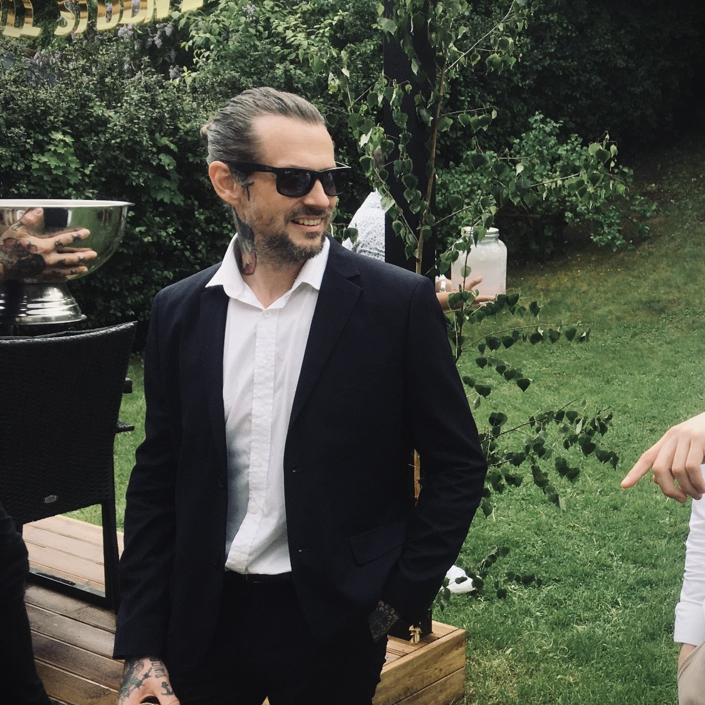

Discover where over 15 years of tattoo artistry meets the cutting-edge world of digital design. I'm Tom, a digital creator with a flair for transforming artistic visions into captivating digital and 3D designs. From Photoshop/procreate to interactive game prototypes, my portfolio is a testament to a lifelong dedication to art in all its forms. Dive into a unique blend of traditional artistry and digital innovation. Let's create something extraordinary together.

Welcome to my creative space!
I'm Tom Thorsén, a versatile artist whose journey has taken me from over 15 years of tattoo artistry to the dynamic realms of digital design, web development, and game creation.
My career began with the intricate and personal art of tattoos, where I honed my skills for over a decade, running my own tattoo shop. This path has cultivated a deep understanding of visual storytelling and artistic expression, which I now bring to the digital canvas.
The world of digital creation captivated me, leading me to teach myself a variety of software tools, including Procreate, Photoshop, Illustrator, Blender, Unreal Engine, Spine 2D, and GitHub. This self-taught journey reflects my eagerness to learn and adapt – if a project demands a new skill, I dive right in with enthusiasm to master it. My portfolio is a blend of diverse skills, from front-end web development, where I meld art and code, to graphic design, where color theory and composition come alive. In 3D modeling, I specialize in character creation, often venturing into the fantastical, and in game design, I focus on crafting immersive, playable prototypes.
with my brother on hobby game projects, I continually challenge myself to push the boundaries of creativity and technology. These collaborations are not just a means of exploring new ideas but also a testament to my belief in continuous learning and growth.
My artistic philosophy is simple: every project is a story waiting to be told, whether it's through the ink of a tattoo, the pixels of a digital illustration, or the code of a web application. As a self-taught professional in various digital mediums, I bring a unique perspective to each creation, ensuring it's not just visually stunning but also resonates on a deeper level.
HTML, CSS, JavaScript
My deep understanding of visual art and color theory allows me to create websites that are not just functional, but also visually captivating.
GalleryProcreate | Photoshop | Illustrator
My expertise in visual storytelling, combined with a deep understanding of color and composition, enables me to create compelling and memorable designs. Whether it's branding, digital art, or custom illustrations, my work is tailored to captivate and communicate effectively. !
GalleryBlender | Nomad Sculpt
Leveraging skills from illustration, I excel in sculpting digital models that are rich in imagination and detail. Whether it's for games, animations, or digital art.
Unreal Engine | Blender | Spine 2d | Procreate
As an artist with a rich background in digital creation, I experiment in bringing game ideas to life through prototype design.
GalleryProcreate | Photoshop
With over 15 years of experience as a tattoo artist, I bring a depth of skill and creativity to every piece I ink. My approach combines a deep respect for traditional tattooing with a flair for contemporary design!
Gallery